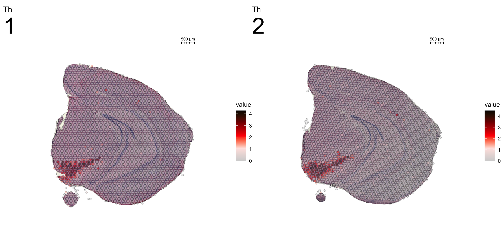
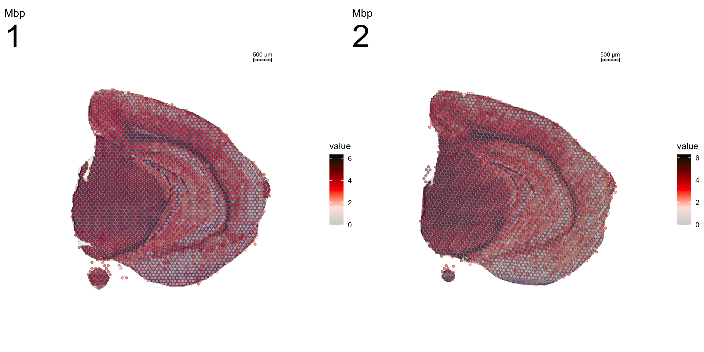
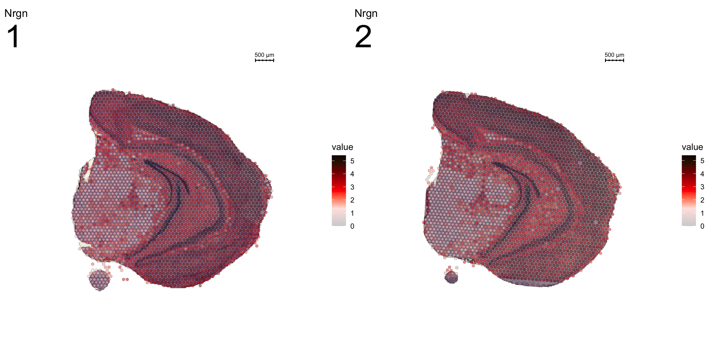

STUtility - Vignette
Joseph Bergenstråhle, Royal Institute of Technology (KTH)
Ludvig Larsson, Royal Institute of Technology (KTH)
Last updated: 2019-10-31
Checks: 6 0
Knit directory: STUtility_web_site/
This reproducible R Markdown analysis was created with workflowr (version 1.3.0). The Checks tab describes the reproducibility checks that were applied when the results were created. The Past versions tab lists the development history.
Great! Since the R Markdown file has been committed to the Git repository, you know the exact version of the code that produced these results.
Great job! The global environment was empty. Objects defined in the global environment can affect the analysis in your R Markdown file in unknown ways. For reproduciblity it’s best to always run the code in an empty environment.
The command set.seed(20191031) was run prior to running the code in the R Markdown file. Setting a seed ensures that any results that rely on randomness, e.g. subsampling or permutations, are reproducible.
Great job! Recording the operating system, R version, and package versions is critical for reproducibility.
Nice! There were no cached chunks for this analysis, so you can be confident that you successfully produced the results during this run.
Great! You are using Git for version control. Tracking code development and connecting the code version to the results is critical for reproducibility. The version displayed above was the version of the Git repository at the time these results were generated.
Note that you need to be careful to ensure that all relevant files for the analysis have been committed to Git prior to generating the results (you can use wflow_publish or wflow_git_commit). workflowr only checks the R Markdown file, but you know if there are other scripts or data files that it depends on. Below is the status of the Git repository when the results were generated:
Ignored files:
Ignored: .DS_Store
Ignored: analysis/.DS_Store
Ignored: analysis/about_cache/
Ignored: analysis/getting_started_cache/
Ignored: analysis/image_processing_cache/
Ignored: analysis/normalization_cache/
Ignored: docs/.DS_Store
Note that any generated files, e.g. HTML, png, CSS, etc., are not included in this status report because it is ok for generated content to have uncommitted changes.
These are the previous versions of the R Markdown and HTML files. If you’ve configured a remote Git repository (see ?wflow_git_remote), click on the hyperlinks in the table below to view them.
| File | Version | Author | Date | Message |
|---|---|---|---|---|
| Rmd | 7cdf8e1 | Ludvig Larsson | 2019-10-31 | Changed font size |
| Rmd | 786357d | Ludvig Larsson | 2019-10-31 | Fixed warnings |
| html | 786357d | Ludvig Larsson | 2019-10-31 | Fixed warnings |
| Rmd | f10ef37 | Ludvig Larsson | 2019-10-31 | Added section noramlization and spatial faetures |
| html | f10ef37 | Ludvig Larsson | 2019-10-31 | Added section noramlization and spatial faetures |
Finding spatial expression patterns and areas of interest
The strength of untargeted whole transcriptome capture is the ability to perform unsupervised analysis and the ability to find spatial gene expression patterns. We’ve found good use of the dimensionality reduction method “ICA” (Independent Component Analysis) to find spatial expression patterns. An example is demonstrated below:
se <- RunICA(se)
Different dimensionality reductions methods are supported via Seurat (RunPCA(), RunTSNE, RunICA(), runUMAP() ) and the output are stored in the Seurat object.
We can then plot a variable number of dimensions across the samples.
ST.DimPlot(se,
dims = c(-1, 2, -3, -4, 5, -6, 7, -8, 9, 10, 11, 12, -13, 14, 15, -16), # If we flip the sign, the ICA vector will be inverted
ncol = 8, # Sets the number of columns at dimensions level
grid.ncol = 2, # Sets the number of columns at sample level
reduction = "ica",
dark.theme = T,
pt.size = 0.5,
center.zero = T,
palette = "MaYl")
| Version | Author | Date |
|---|---|---|
| f10ef37 | Ludvig Larsson | 2019-10-31 |
To extract the genes that drives the separation according to the dimensionality reduction, we can use the ProjectDim() function. Where we specify the dimensions of interest (here IC_1 and IC_3, which are regions that seems to confer a clear spatial expression histology.
ProjectDim(se, reduction = "ica", dims = c(1, 2, 4, 5))IC_ 1
Positive: Nrgn, Snap25, Cck, mt-Nd3, Calm2, Olfm1, Rtn1, Atp1b1, Pcp4, Uchl1
Stmn3, Pvalb, Calm1, Cplx1, Ywhah, Ndufa4, Ndrg4, Nefl, Nap1l5, Gm42418
Negative: Mal, Mog, Cryab, Cnp, Mag, Opalin, Cldn11, Qdpr, Sept4, Trf
Mobp, Tspan2, Pllp, Apod, Ppp1r14a, Gsn, Grb14, Car2, Ugt8a, Plekhb1
IC_ 2
Positive: Prkcd, Tnnt1, Pcp4, Zic1, Ptpn4, Plekhg1, Adarb1, Ramp3, Rora, Tcf7l2
Pdp1, Ptpn3, Rgs16, Ntng1, Amotl1, Plcb4, Synpo2, Shox2, Patj, Rasgrp1
Negative: Nrgn, Tmsb4x, Ctxn1, Rtn1, Sst, Snca, Nnat, Rplp1, 6330403K07Rik, Ly6h
Cst3, Crym, Rpl37, 1110008P14Rik, Rps29, Rpl13, Hpca, Rps21, Olfm1, Calb2
IC_ 4
Positive: Mbp, Plp1, Pcp4, Mobp, Ptgds, Cryab, Qdpr, Mal, Crym, Apod
Nnat, Plekhb1, Calb2, Tmsb10, Cnp, Trf, Mag, Bcas1, Mog, Sparc
Negative: Nrgn, Lamp5, Camk2n1, Cck, Egr1, Arc, Igfbp6, Olfm1, Egr3, Atp1a1
1110008P14Rik, Nr4a1, Dusp14, Rgs4, Cabp1, Ier5, Pdp1, Lingo1, Calb1, Cx3cl1
IC_ 5
Positive: Slc6a3, Th, Ddc, Slc18a2, Sncg, Slc10a4, Ret, Dlk1, Chrna6, En1
Drd2, Cplx1, Aldh1a1, Sv2c, Gch1, Chrnb3, Foxa1, Gucy2c, C130021I20Rik, Klhl1
Negative: Nrgn, Olfm1, Cck, Slc17a7, Calm2, Sst, Ctxn1, Egr1, Ppp3ca, Chn1
Calm1, Nptxr, Crym, Camk2n1, Arc, Tmsb4x, Hpca, Itpka, Ptk2b, Camk2a An object of class Seurat
26874 features across 5053 samples within 2 assays
Active assay: SCT (13437 features)
1 other assay present: RNA
5 dimensional reductions calculated: ica, umap, umap.3d, NMF, umap.NMFClustering
Clustering is a standard procedure in genomic analysis, and the methods for doing so are numerous. Here we demonstrate an example where we use the result of ICA to perform clustering. In the previous section, we demonstrated how to plot a subset of dimensions from the ICA output. Going through this list, we can notice the dimensions that are “spatially active”, i.e. that seems to confer a spatial pattern along their axis. We can extract these dimensions:
keep.dims <- c(1:12, 16:18, 21:28, 30:34, 40:41, 47, 49:50)
And then use them to construct a Shared Nearest Neighbor (SSN) Graph.
se <- FindNeighbors(object = se, dims = keep.dims, verbose = FALSE, reduction = "ica")
Followed by clustering using a modularity optimizer
se <- FindClusters(object = se, verbose = FALSE)
And plotting of the clusters spatially
tol18rainbow <- c("#771155", "#AA4488", "#CC99BB", "#114477", "#4477AA", "#77AADD", "#117777", "#44AAAA", "#77CCCC", "#777711", "#AAAA44", "#DDDD77", "#774411", "#AA7744", "#DDAA77", "#771122", "#AA4455", "#DD7788")
se[["clusters_ICA"]] <- se[["seurat_clusters"]]
ST.FeaturePlot(object = se, features = "clusters_ICA", dark.theme = T, cols = tol18rainbow, pt.size = 0.5)
| Version | Author | Date |
|---|---|---|
| f10ef37 | Ludvig Larsson | 2019-10-31 |
se <- SetIdent(se, value = "clusters_ICA")
DimPlot(se, reduction = "umap", cols = tol18rainbow) + DarkTheme()
| Version | Author | Date |
|---|---|---|
| f10ef37 | Ludvig Larsson | 2019-10-31 |
If you think that the distribution of clusters gets too cluttered, you can also split the view so that only one cluster at the time gets colored.
ST.FeaturePlot(object = se, features = "clusters_ICA", dark.theme = T, cols = tol18rainbow, pt.size = 0.1, split.labels = T, indices = 1)
| Version | Author | Date |
|---|---|---|
| f10ef37 | Ludvig Larsson | 2019-10-31 |
We can take a look a specific look at the most variable features.
head(se@assays$SCT@var.features, 20) [1] "Hbb-bs" "Hba-a1" "Hba-a2" "Plp1" "Mbp" "Ptgds" "Hbb-bt"
[8] "Slc6a3" "Sst" "Th" "Ddc" "Npy" "Slc18a2" "Mobp"
[15] "Nrgn" "Mal" "Pcp4" "Prkcd" "Apod" "Myoc" top <- se@assays$SCT@var.features
fts <- c("Slc18a2", "Prkcd", "Opalin", "Lamp5")
for (ftr in fts) {
print(MultiFeatureOverlay(se,
features = ftr,
sampleids = 1:2,
cols = c("black", "dark blue", "cyan", "yellow", "red", "dark red"),
method = "raster",
pt.size = 0.5,
pt.alpha = 0.5,
dark.theme = T))
}[1] 0
| Version | Author | Date |
|---|---|---|
| f10ef37 | Ludvig Larsson | 2019-10-31 |
[1] 0
| Version | Author | Date |
|---|---|---|
| f10ef37 | Ludvig Larsson | 2019-10-31 |
[1] 0
| Version | Author | Date |
|---|---|---|
| f10ef37 | Ludvig Larsson | 2019-10-31 |

| Version | Author | Date |
|---|---|---|
| f10ef37 | Ludvig Larsson | 2019-10-31 |
[1] 0
Another useful feature is that you can now compare the spatial distribution of a gene with the typical “graph embeddings” s.a. UMAP and t-SNE.
# Run UMAP
se <- RunUMAP(se, reduction = "ica", dims = keep.dims, n.neighbors = 10)# Define colors for heatmap
heatmap.colors <- c(rgb(40, 40, 40, maxColorValue = 255), "dark blue", "cyan", "white")
fts <- c("Slc18a2", "Prkcd", "Opalin", "Lamp5")
# plot transformed features expression on UMAP embedding
p.fts <- lapply(fts, function(ftr) {
FeaturePlot(se, features = ftr, reduction = "umap", order = TRUE, cols = heatmap.colors) + DarkTheme()
})
# plot transformed features expression on Visium coordinates
p3 <- ST.FeaturePlot(se, features = fts, ncol = 2, grid.ncol = 1, cols = heatmap.colors, pt.size = 0.5, dark.theme = T)
# Construct final plot
cowplot::plot_grid(cowplot::plot_grid(plotlist = p.fts, ncol = 1), p3, ncol = 2, rel_widths = c(1, 2))
| Version | Author | Date |
|---|---|---|
| f10ef37 | Ludvig Larsson | 2019-10-31 |
RGB dimensionality reduction plots
One approach to visualize the result of dimensionality reduction is to use the first three dimensions and transform the values into RGB color space. This 3 dimensional space can then be utilized for spatial visualization. We demonstrate the technique with UMAP, using our ICA dimensions as input:
se <- RunUMAP(object = se, dims = keep.dims, verbose = FALSE, n.components = 3, reduction = "ica", reduction.name = "umap.3d")
We use the first three dimensions for plotting:
ST.DimPlot(object = se, dims = 1:3, reduction = "umap.3d", blend = T, dark.theme = T, pt.size = 0.5)
| Version | Author | Date |
|---|---|---|
| f10ef37 | Ludvig Larsson | 2019-10-31 |
Once again the ProjectDim() function can be used to display the genes that are most strongly correlated with the coordinate system. Note in the function call above that we defined reduction.name, which are subsequently stored in the Seurat object in the reduction slot:
ProjectDim(se, reduction = "umap.3d")UMAP_ 1
Positive: Nrgn, Camk2n1, Lamp5, Egr1, Arc, Hpca, Olfm1, Itpka, Nr4a1, Cck
1110008P14Rik, Ppp3ca, Rgs4, Atp1a1, Egr3, Chn1, Igfbp6, Ier5, Calm2, Pantr1
Negative: Mbp, Plp1, Mobp, Pcp4, Mal, Cryab, Cnp, Apod, Trf, Mag
Ptgds, Qdpr, Mog, Cldn11, Plekhb1, Tcf7l2, Sept4, Prkcd, Tspan2, Tnnt1
UMAP_ 2
Positive: Mbp, Plp1, Mobp, Ptgds, Apod, Qdpr, Mal, Trf, Cryab, Sparc
Plekhb1, Cnp, Mag, Mog, Aldh1a1, Tcf7l2, Bcas1, Cldn11, Sept4, Vamp1
Negative: Nrgn, Olfm1, Cck, Camk2n1, Egr1, Arc, Lamp5, Slc17a7, 1110008P14Rik, Ctxn1
Mef2c, Nptxr, Calm2, Atp1a1, Chn1, Sst, Ttc9b, Lingo1, Stx1a, Egr3
UMAP_ 3
Positive: Olfm1, Nnat, Ncdn, Calb1, Apoe, Cpne6, C1ql2, Nptxr, Kcnip2, Bhlhe22
Prdm8, Limd2, Dsp, Hbb-bs, Myoc, Necab2, Fabp7, Dcn, Kctd4, Npy2r
Negative: Mbp, Plp1, Mobp, Cryab, 3110035E14Rik, Mal, Pcp4, Cnp, Mag, Myl4
Sst, Trbc2, Arc, Stmn1, Qdpr, Mog, Egr1, 1110008P14Rik, Trf, Cldn11 An object of class Seurat
26874 features across 5053 samples within 2 assays
Active assay: SCT (13437 features)
1 other assay present: RNA
5 dimensional reductions calculated: ica, umap, umap.3d, NMF, umap.NMF
As seen in the plot above, there are clear spatial patterns that are confirmed by the histology of the tissue. Lets take an example, looking at the first UMAP coordinate (red color) - we note a clear pattern [bra beskrivning av vad vi ser]
We can utilize an external data source, the Allen brain atlas, to see how well our data match. Lets take the gene with highest correlation to the red color, i.e. “Cck”.
https://mouse.brain-map.org/gene/show/12209 

MultiFeatureOverlay(se, features = "Cck",
sampleids = 1:2,
cols = c("black", "dark blue", "cyan", "yellow", "red", "dark red"),
pt.size = 0.5,
pt.alpha = 0.5,
method = "raster",
dark.theme = T)
| Version | Author | Date |
|---|---|---|
| f10ef37 | Ludvig Larsson | 2019-10-31 |
A work by Joseph Bergenstråhle and Ludvig Larsson
sessionInfo()R version 3.6.1 (2019-07-05)
Platform: x86_64-apple-darwin15.6.0 (64-bit)
Running under: macOS Mojave 10.14.6
Matrix products: default
BLAS: /Library/Frameworks/R.framework/Versions/3.6/Resources/lib/libRblas.0.dylib
LAPACK: /Library/Frameworks/R.framework/Versions/3.6/Resources/lib/libRlapack.dylib
locale:
[1] en_US.UTF-8/en_US.UTF-8/en_US.UTF-8/C/en_US.UTF-8/en_US.UTF-8
attached base packages:
[1] parallel stats4 stats graphics grDevices utils datasets
[8] methods base
other attached packages:
[1] STutility_0.1.0 ggplot2_3.2.1
[3] SingleCellExperiment_1.6.0 SummarizedExperiment_1.14.1
[5] DelayedArray_0.10.0 BiocParallel_1.18.1
[7] matrixStats_0.55.0 Biobase_2.44.0
[9] GenomicRanges_1.36.1 GenomeInfoDb_1.20.0
[11] IRanges_2.18.3 S4Vectors_0.22.1
[13] BiocGenerics_0.30.0 Seurat_3.1.1
loaded via a namespace (and not attached):
[1] backports_1.1.5 workflowr_1.3.0
[3] systemfonts_0.1.1 plyr_1.8.4
[5] igraph_1.2.4.1 lazyeval_0.2.2
[7] splines_3.6.1 crosstalk_1.0.0
[9] listenv_0.7.0 digest_0.6.22
[11] foreach_1.4.7 htmltools_0.4.0
[13] viridis_0.5.1 magick_2.2
[15] tiff_0.1-5 gdata_2.18.0
[17] magrittr_1.5 cluster_2.1.0
[19] doParallel_1.0.15 ROCR_1.0-7
[21] globals_0.12.4 RcppParallel_4.4.4
[23] R.utils_2.9.0 jpeg_0.1-8
[25] colorspace_1.4-1 ggrepel_0.8.1
[27] xfun_0.10 dplyr_0.8.3
[29] crayon_1.3.4 RCurl_1.95-4.12
[31] jsonlite_1.6 zeallot_0.1.0
[33] survival_2.44-1.1 zoo_1.8-6
[35] iterators_1.0.12 ape_5.3
[37] glue_1.3.1 gtable_0.3.0
[39] zlibbioc_1.30.0 XVector_0.24.0
[41] webshot_0.5.1 leiden_0.3.1
[43] future.apply_1.3.0 scales_1.0.0
[45] bibtex_0.4.2 miniUI_0.1.1.1
[47] Rcpp_1.0.2 metap_1.1
[49] viridisLite_0.3.0 xtable_1.8-4
[51] reticulate_1.13 rsvd_1.0.2
[53] SDMTools_1.1-221.1 tsne_0.1-3
[55] htmlwidgets_1.5.1 httr_1.4.1
[57] gplots_3.0.1.1 RColorBrewer_1.1-2
[59] ica_1.0-2 pkgconfig_2.0.3
[61] R.methodsS3_1.7.1 uwot_0.1.4
[63] labeling_0.3 tidyselect_0.2.5
[65] rlang_0.4.1 manipulateWidget_0.10.0
[67] reshape2_1.4.3 later_1.0.0
[69] munsell_0.5.0 tools_3.6.1
[71] ggridges_0.5.1 evaluate_0.14
[73] stringr_1.4.0 fastmap_1.0.1
[75] yaml_2.2.0 npsurv_0.4-0
[77] knitr_1.25 fs_1.3.1
[79] fitdistrplus_1.0-14 rgl_0.100.30
[81] caTools_1.17.1.2 purrr_0.3.2
[83] RANN_2.6.1 readbitmap_0.1.5
[85] pbapply_1.4-2 future_1.14.0
[87] nlme_3.1-141 whisker_0.4
[89] mime_0.7 R.oo_1.22.0
[91] ggiraph_0.6.1 xml2_1.2.2
[93] compiler_3.6.1 plotly_4.9.0
[95] png_0.1-7 lsei_1.2-0
[97] Morpho_2.7 tibble_2.1.3
[99] stringi_1.4.3 RSpectra_0.15-0
[101] gdtools_0.2.0 lattice_0.20-38
[103] Matrix_1.2-17 shinyjs_1.0
[105] vctrs_0.2.0 pillar_1.4.2
[107] lifecycle_0.1.0 Rdpack_0.11-0
[109] lmtest_0.9-37 RcppAnnoy_0.0.13
[111] data.table_1.12.2 cowplot_1.0.0
[113] bitops_1.0-6 irlba_2.3.3
[115] Rvcg_0.18 gbRd_0.4-11
[117] httpuv_1.5.2 colorRamps_2.3
[119] imager_0.41.2 R6_2.4.0
[121] promises_1.1.0 bmp_0.3
[123] KernSmooth_2.23-15 gridExtra_2.3
[125] codetools_0.2-16 MASS_7.3-51.4
[127] gtools_3.8.1 assertthat_0.2.1
[129] rprojroot_1.3-2 withr_2.1.2
[131] sctransform_0.2.0 GenomeInfoDbData_1.2.1
[133] grid_3.6.1 tidyr_1.0.0
[135] rmarkdown_1.16 Rtsne_0.15
[137] git2r_0.26.1 shiny_1.4.0